Gunslinger
Ranged damage; no magic.
Born in the duelling yards of Ironreach and on the Corsair decks. Black powder was an Dwarves secret for a century, until a Goblin sold it to a Corsair.
Spellbook
Role: Ranged DPS (physical, gunpowder) · Resource: Focus (regenerates), with a Reload mechanic on some spells · Races: Dwarves, Goblins, Forged, Corsairs, Half-Bloods
Armed with twin pistols or a rifle. Moves fast, sets traps and shoots enemies apart at range with special ammunition.
In Orvessa: gunpowder needs no god and no demon. In a world that just lost its last god, that makes the Gunslinger the most dependable fighter alive.
| Level | Spell | Effect |
|---|---|---|
| 1 | Quick Shot | A fast shot, low damage |
| 4 | Pistol Whip | Melee strike, dazes for 2 s |
| 6 | Dual Draw | Fires both pistols at once |
| 8 | Ricochet | The bullet bounces between 3 targets |
| 10 | Rolling Evade | Rolls 8 m and breaks roots |
| 14 | Snare Trap | Lays a trap that slows |
| 18 | Piercing Round | Ignores part of the target's armour |
| 22 | Fan the Hammer | Channelled: 6 rapid shots |
| 26 | Flash Powder | Blinds enemies in an area |
| 30 | Dead Eye | +crit and +range for 12 s |
| 36 | Dynamite Round | AoE explosion |
| 42 | Quickdraw | Instant shot when an enemy starts a cast on you |
| 48 | Execution Shot | Massive damage to a target under 20% health |
| 55 | Lead Storm | A rain of bullets in a cone |
| 60 | Last Stand Salvo | Ultimate: 8 s of uninterrupted fire |
Talent trees
- Outlaw (twin pistols, burst): Twin Fury (+10% damage with both pistols), Gunsmoke (bullets leave smoke that grants dodge), Hot Barrels (every 5th shot is free), Bounty Hunter (+damage against marked targets). Capstone: Blaze of Glory, 15 s of double fire rate, but you take more damage.
- Sharpshooter (rifle, long range): Steady Aim (+range), Armour Breaker (piercing lowers the target's armour), Long Shot (+damage beyond 30 m), Bipod Stance (standing still gives +30% damage). Capstone: One Perfect Bullet, a shot that always crits for 500% damage, 3 min cooldown.
- Trapper (traps, control): Improved Traps (shorter cooldown), Bear Trap (roots for 5 s), Tripwire Detonation (explosive trap), Trap Mastery (3 traps out at once). Capstone: Minefield, lays 6 mines in a circle.
Gallery

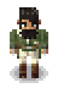

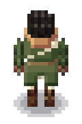

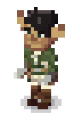

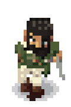

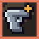

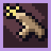


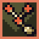

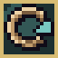

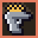

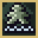

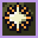